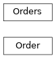

pyokx.okx_market_maker.order_management_service.model.Order
- class pyokx.okx_market_maker.order_management_service.model.Order.Order(acc_fill_sz: str = '0', amend_result: str = 0, avg_px: float = 0, c_time: int = 0, category: pyokx.okx_market_maker.utils.OkxEnum.OrderCategory = None, ccy: str = '', cl_ord_id: str = '', exec_type: pyokx.okx_market_maker.utils.OkxEnum.OrderExecType = None, fee: float = 0, fee_ccy: str = '', fill_fee: float = 0, fill_fee_ccy: str = '', fill_notional_usd: float = 0, fill_px: float = 0, fill_sz: str = '0', fill_time: int = 0, inst_id: str = '', inst_type: pyokx.okx_market_maker.utils.OkxEnum.InstType = None, lever: float = 0, notional_usd: float = 0, ord_id: str = '', ord_type: pyokx.okx_market_maker.utils.OkxEnum.OrderType = None, pnl: float = 0, pos_side: pyokx.okx_market_maker.utils.OkxEnum.PosSide = None, px: float = 0, rebate: float = 0, rebate_ccy: str = '', reduce_only: bool = (False,), req_id: str = '', side: pyokx.okx_market_maker.utils.OkxEnum.OrderSide = None, state: pyokx.okx_market_maker.utils.OkxEnum.OrderState = None, sz: float = 0, tag: str = '', trade_id: str = '', u_time: int = 0)[source]
Bases:
object- acc_fill_sz: str = '0'
- amend_result: str = 0
- avg_px: float = 0
- c_time: int = 0
- category: OrderCategory = None
- ccy: str = ''
- cl_ord_id: str = ''
- exec_type: OrderExecType = None
- fee: float = 0
- fee_ccy: str = ''
- fill_fee: float = 0
- fill_fee_ccy: str = ''
- fill_notional_usd: float = 0
- fill_px: float = 0
- fill_sz: str = '0'
- fill_time: int = 0
- inst_id: str = ''
- lever: float = 0
- notional_usd: float = 0
- ord_id: str = ''
- pnl: float = 0
- px: float = 0
- rebate: float = 0
- rebate_ccy: str = ''
- reduce_only: bool = (False,)
- req_id: str = ''
- state: OrderState = None
- sz: float = 0
- tag: str = ''
- trade_id: str = ''
- u_time: int = 0
- class pyokx.okx_market_maker.order_management_service.model.Order.Orders(_order_map: Dict[str, pyokx.okx_market_maker.order_management_service.model.Order.Order] = <factory>, _client_order_map: Dict[str, pyokx.okx_market_maker.order_management_service.model.Order.Order] = <factory>, _non_client_order_map: Dict[str, pyokx.okx_market_maker.order_management_service.model.Order.Order] = <factory>)[source]
Bases:
object
